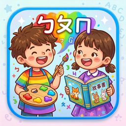
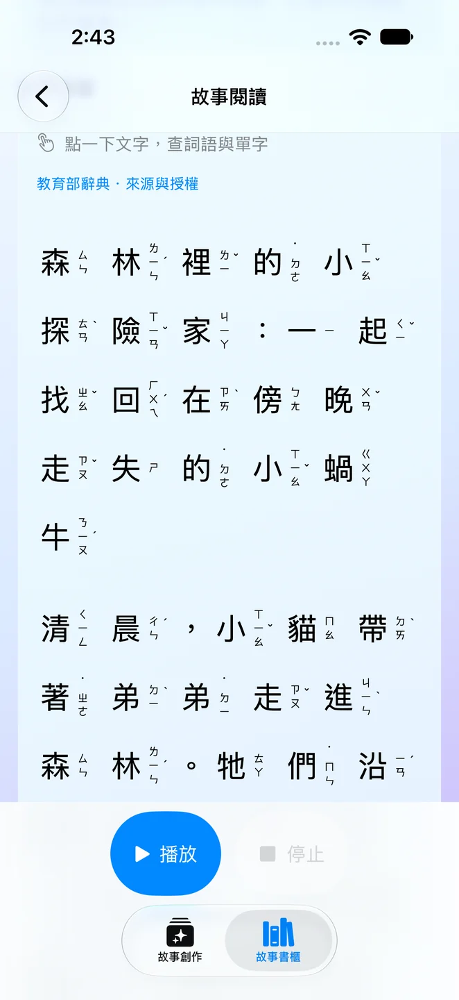
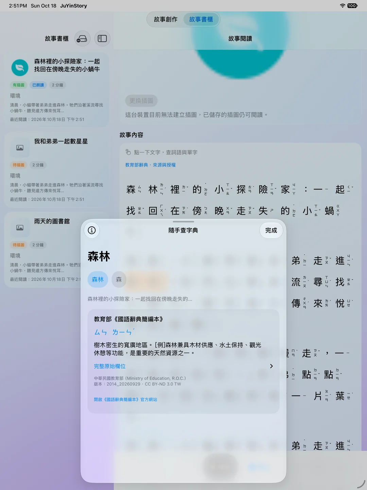
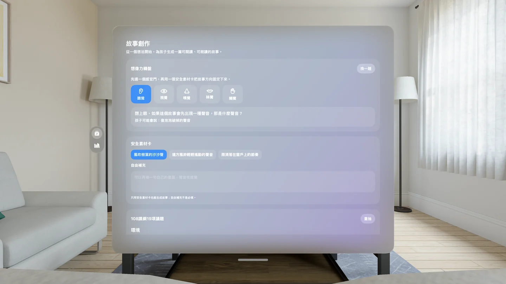
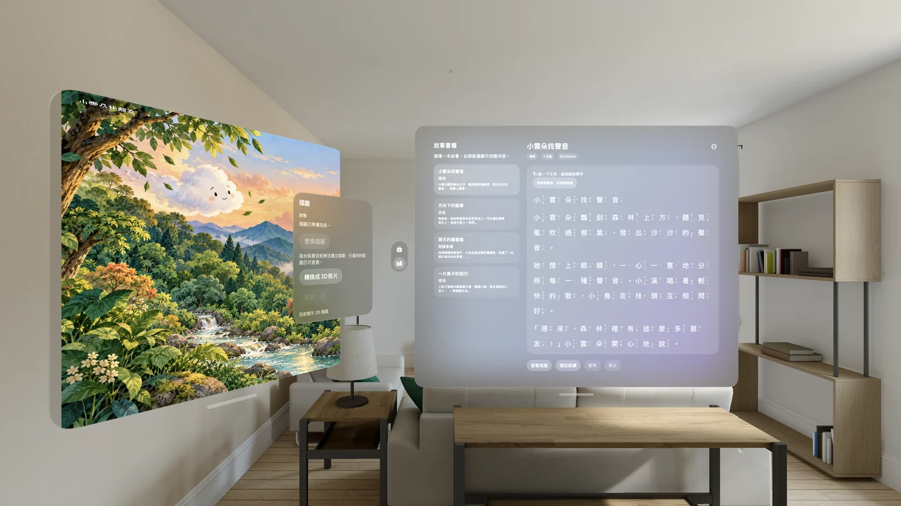

注音故事 1.2 · iOS / visionOS故事讀到不懂的字，點一下，一起弄懂。
從孩子熟悉的聲音、氣味與景色開始，準備一篇繁體中文故事。閱讀時有注音與朗讀陪伴，遇到不熟的字詞，直接查看教育部辭典的讀音與解釋，再回到故事繼續讀。

1.2 雙平台更新：閱讀與查字接在一起
iPhone／iPad 與 Apple Vision Pro 新版皆已上架。這次加入閱讀點字查詢，擴充注音詞語覆蓋，改善破音字、上下文判讀，以及朗讀高亮、文字位置與捲動同步。查詢時會暫停朗讀，讀完解釋後可回到故事接續播放。
調整書櫃、閱讀器、朗讀控制與大字體版面，也改善 iPhone Duo 在不同螢幕空間下的閱讀操作。
在閱讀器內查字，將文字與插圖分開擺放；支援的系統可把插圖由 2D 轉為具有立體深度的空間影像。1.2 改善插圖儲存與 2D／3D 切換流程。
升級會保留既有故事與插圖，讓原本的故事書櫃繼續陪讀。
從一個生活畫面，讀成自己的故事
從聽覺、視覺、嗅覺、味覺與觸覺素材出發，搭配 108 課綱 19 項議題與成語，選擇今天想讀的方向。
跟著注音閱讀，或播放朗讀；點字查看詞語、單字與不同讀音，將新詞放回句子裡理解。
透過系統插圖介面替故事配圖，保存喜歡的文字與插圖，下次直接開啟再讀。
1.2 實際操作畫面
以下為新版 App 的繁體中文模擬器截圖，展示閱讀查字、故事創作與插圖視窗。點選圖片可放大。
- 可用裝置
- iPhone / iPad / Apple Vision Pro
- 下載方式
- 付費下載
iOS 1.2 與 visionOS 1.2 已上架。生成故事需支援且已啟用 Apple Intelligence 的裝置與已下載模型；插圖與空間影像依系統支援提供。已儲存故事與內建辭典可離線閱讀及查詢。







生成需求與離線閱讀
故事生成統一使用 Apple Foundation Models，已移除外部文字模型與 API 金鑰設定，不需註冊第三方模型服務。生成需要支援的裝置、語言與系統設定、已啟用的 Apple Intelligence，以及已下載的模型。
插圖使用 Apple Image Playground 的系統介面，插圖與空間影像功能依裝置及系統支援提供；系統生圖與語音服務可能需要網路。已儲存故事的閱讀與內建辭典查詢可離線使用，不需每次重新生成。
故事與插圖儲存在裝置上。生成內容與自動注音仍可能有誤，建議家長先確認內容，再依孩子程度陪讀與討論。查看隱私權政策 · 使用條款
辭典資料來源
中華民國教育部《國語辭典簡編本》（2014_20260929，45,178 筆）與《國語小字典》（2019_20260929，4,719 筆），合計 49,897 筆官方文字詞條。依「創用 CC 姓名標示－禁止改作 3.0 臺灣」授權使用；完整來源、版本、授權與官方原始資料可在 App 內查閱。
為下一次親子共讀準備故事，也讓每個不熟的字都有查詢入口。
下載注音故事Meet an unfamiliar word? Tap it and keep learning.
Prepare a Traditional Chinese story from familiar sounds, scents, and everyday scenes. Read with Zhuyin and narration, look up an unfamiliar word in a Ministry of Education dictionary, then return to the story.
Version 1.2 on both platforms
The iPhone/iPad and Apple Vision Pro updates are available. Tap-to-look-up reading joins expanded Zhuyin coverage, improved context-sensitive pronunciation, and better alignment between speech, highlighted text, and scrolling. Looking up a word pauses narration; return to the reader to resume.
Refined library, reader, playback controls, and large-text layouts, including adjustments for the different screen spaces on iPhone Duo.
Look up words within the reader and arrange text and illustrations in separate windows. Supported systems can turn a 2D illustration into a spatial image with depth. Version 1.2 improves image saving and 2D/3D switching.
Updating preserves existing stories and illustrations in your library.
From an everyday moment to a story
Use sounds, sights, scents, tastes, and textures, together with Taiwan’s 19 curriculum themes and idioms, to guide a story.
Follow Zhuyin or listen to narration. Tap a word to explore its meaning and alternative readings, then understand it in the sentence.
Add an illustration through the system interface and save the story to revisit together.
Inside version 1.2
Actual simulator screenshots of the new app, shown in Traditional Chinese. Explore reading, dictionary lookup, story creation, and the illustration window. Select an image to enlarge it.
- Devices
- iPhone / iPad / Apple Vision Pro
- Download
- Paid download
iOS 1.2 and visionOS 1.2 are available. Story generation requires a supported device with Apple Intelligence enabled and its model downloaded. Illustration and spatial-image features depend on system support. Saved stories and the built-in dictionary are available offline.
Generation requirements and offline reading
Stories now use Apple Foundation Models. External text providers and API key settings have been removed; no third-party model account is needed. Generation requires a supported device, language and system configuration, enabled Apple Intelligence, and a downloaded model.
Illustrations use Apple’s Image Playground interface. Illustration and spatial-image features depend on device and system support; system image and speech services may need an internet connection. Saved stories and built-in dictionary lookup work offline, without generating them again.
Stories and illustrations are stored on the device. Generated content and automatic Zhuyin can contain mistakes; parents should review the material and choose what suits their child. Privacy policy · Terms of use
Dictionary sources
Taiwan’s Ministry of Education Concised Mandarin Chinese Dictionary (2014_20260929, 45,178 entries) and Mandarin Chinese Mini Dictionary (2019_20260929, 4,719 entries) provide 49,897 official text entries under CC BY-ND 3.0 Taiwan. Full attribution, versions, licence notices, and official source files are available in the app.
Prepare your next shared reading session, with a way to explore unfamiliar words as you go.
Download Zhuyin Story